로지스틱은 px=p(y=1|x)만 고려하는데
클레시피케이션은
p(x),p(y)의 확률도 고려한다.
p(y|x)*p(x) = p(x|y)*p(y)
p(y|x) = p(x|y)*p(y)/p(x)
이게 엘리에이접근법?
제일 쉬운 가정을 한다. y는 정규분포가 아니고 x가 정규분포를 따른다고 가정한다.
y가 주어줬을때 x가 정규분포를 따른다고 가정한다.
p|x|y = k
정규분포는 평균과 분산의결정 k0,1,2,3 이면 4개의 파라미터가 필요하다.
y가 찾아네는 
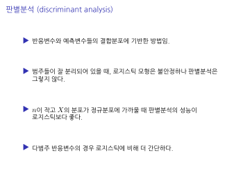
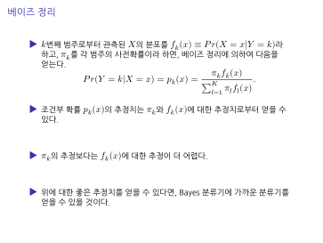
분자에 있는 걸 계산했을때 제일 큰 상황에 대해 그 k에 대해 프레딕션하면 된다..? 예측을할때는 분자만 계산하면됨
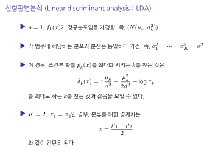
k를 안쓴게 똑같은 시그마일때 파이는 훈련데이터에서 실제로 관측한 값이다.
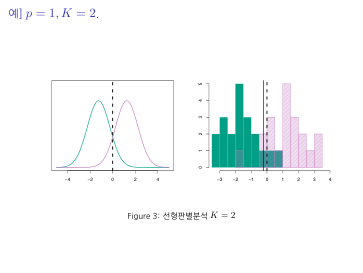
정규분포 초록색은 y가 1일때 보라색은 y가 2일때의 정규분포다. 델타1과 델타2는 x가 영일때 정확하게 일치한다.
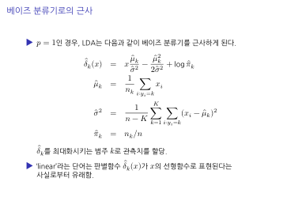
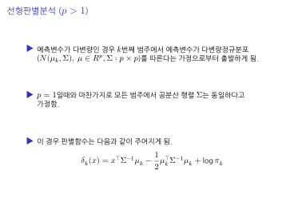
공분산..?
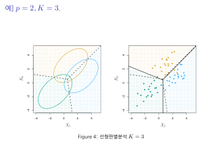
왼쪽 노란 x1y=1 파란 x1y2
초록 x1y3 각각의 색깔은 범주에 대한 확률이 높은 쪽이라고 보면된다.
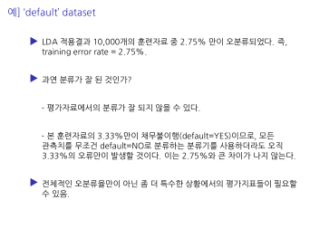
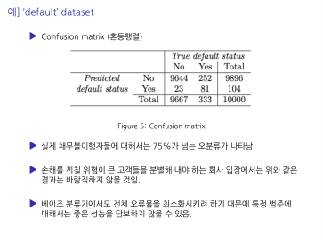
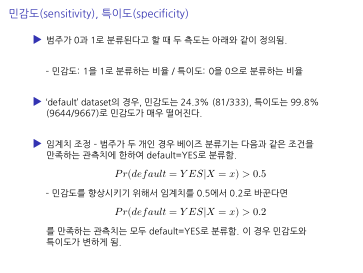
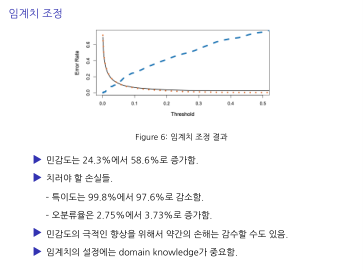
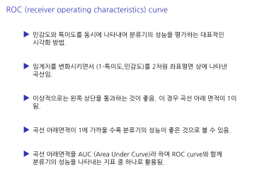
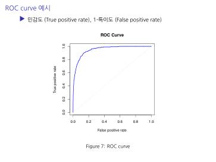
senstivity 쪽에 더 관심이 있다. 얼마나 빨리 1에 가까워지나를 살펴보는것이다. x축은 1-specify이다. 잘맞추는것이 필요하다. 즉 x축은 작은값이 더 원하는 방향이다. 상단은 민감도 영역에서 좋은것이다. 하단에 가까울 수록 특이도에 좋다. 우상단은 특이도를 포기했을때 민감ㄷ가 좋다는 곳이다. 좌하단은 특이도가 가장 좋은 구역
즉 roc커브는 선을 의미하는것으로 특이도가 줄어들면서 민감도가 좋아지는 것이다. 특이도를 희생했을때 민감도가 빨리 좋아지는것이 좋은 ROC커브이다. auc는 면적으로 면적이 크면 클수록 좋다.
즉 민감도 때문이다. 관심있는 물체에 전체 에큐러시는 떨어질 수 있다. 그럼 기준을 바꿔서 어떤식으로 바뀌는지 봐야한다. 얼만큼의 희생이 득실을 가져다 주는지를 알려주는것이다.
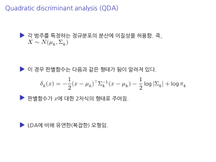
시그마 값들이 다다르다라고 할때 각각 계산하면된다. 이방법을 안쓴다. 그이유는 lda ㅠkfkx를 계산해서 큰값을 계산하는데 qda는 선형으로 안되고 곡선으로 된다. 선형으로 쓴다고하면 점선으로 된다. 아래 사진으로 lda와 qda의 차이를 볼 수 있다. 곡선과 직선이다.
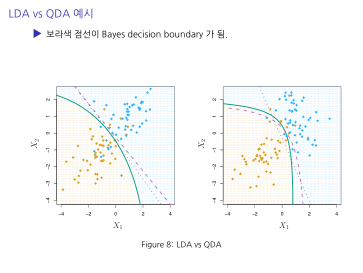
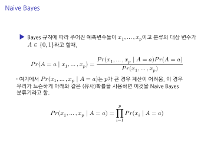
여기서 a는 y이다. 1번째 x에서 p가 너무클때 즉 차원이 엄청 클때 2번째 x가 연속형과 이산형이 섞여있을때 머리아프다. 이럴때 적용하는게 naivebayes이다. x가 여러개인데 x1만 살펴봐고 다음 x2도 살펴보고 쭉쭉 해서 상관관계를 무시하고 계산하는 과정이다. x의 차원이 3차원이다. 공분산행렬일때 각각 보면 된다.
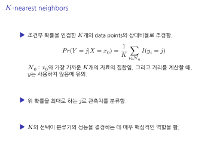
주변을 보고 이것들을 어떻게 볼꺼냐 정의를 하는것이다.
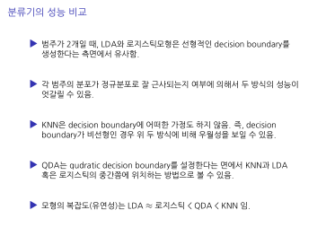
- 3.knn장점은 계산할게 별로 없다. 확률계산이 없다는것이다. 정규분포가정할 필요도 없다.
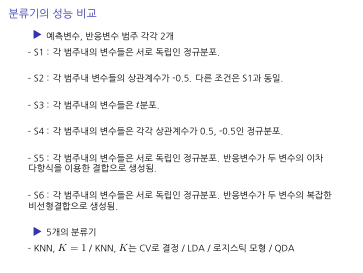
몇가지 실험해봤다.
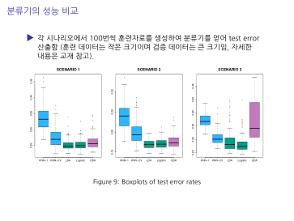
분류기를 돌려본결과 이걸 염두해라 복잡도가 어떻게 올라가냐면 x(시나리오)5와 x6(시나리오)가 제일 복잡하다. 아래 시나리오 5는 qda가 괜찮다. 즉 디시전 바운더리가 선형이 아니고 복잡한경우에 좋았다. 시나리오6은 knn이 좋다. 나머지를 보면 시나리오4는 qda가 좋다. 시나리오123은 리니어가 좋다. 즉 선형에 좋은 데이터이다.
즉 데이터의 특성에 따라 작동하는 방식이 다 다르다는 것을 알 수 있다.
기본적인 특징은 단순한 유형에 대해 로지스틱 LDA쓰라는것이다. qda는 t분포일때 안좋다. 분포가정이 강하게 끼어져있어서
나중에 분석을 할때 여러 상황을 할때 다잘하는건 없지만 평균적으로 잘하는 것들은 있다.
knn-1은 주변을 볼때 하나만 보는것이다 knn-cv는 교차방법을 나중에 배울텐데 데이터를 몇개를 볼건지를 결정을하고 그 수만큼 본것이다. cv가 더 좋을 수 있다. 주변 하나만 본 것 보다는 더 잘 맞출 수 있다.
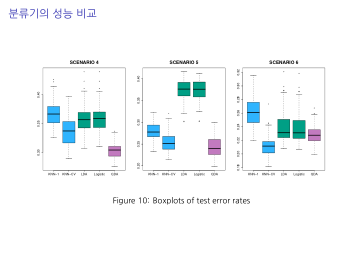
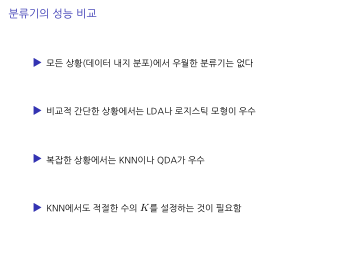